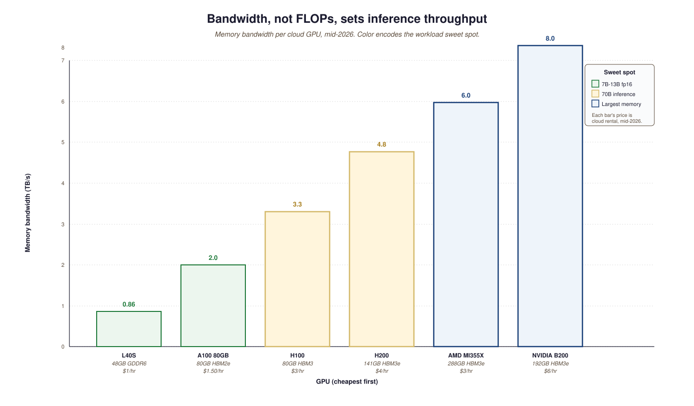

"Premature optimization is the root of all evil, but failing to plan capacity is the root of all outages."
Adapted from Donald Knuth, Structured Programming, 1974
Compute planning starts before any GPU is rented: it is a sizing exercise driven by your serving SLO, model size, and traffic. This section walks the decisions that turn a chosen model into a hardware bill of materials and a deployment plan that survives real load.
Prerequisites
This section assumes familiarity with LLM API patterns from Section 11.1 and with latency-tail analysis from Section 44.3. The model-registry workflow is covered in detail later in the book.
Compute is the single largest variable cost in an LLM product. Get the planning wrong and you either burn the budget on idle GPUs or run out of capacity at the worst possible moment. This chapter shows how to size compute correctly: which GPUs match which workloads, when API calls are cheaper than self-hosting, how to forecast capacity for production traffic, and how to budget for the unpredictable cost spikes (long-context queries, agentic loops, model upgrades) that wreck plans built on average numbers.
The chapter assumes you have made the build-vs-buy decision from Chapter 63 and are now sizing the "build" side. If you are pure-API, much of this chapter is reference material rather than action items; you still need to understand the GPU tier story to predict your API costs, because providers price relative to their underlying hardware. This section opens with the basic vocabulary and the three workload categories that drive everything else.
57.1.1 The three workload categories
A 70-billion-parameter model in fp16 needs 140 GB just to load the weights, which means it does not fit on a single H100. Engineers usually discover this on a Friday afternoon, the day before a launch, and the resulting scramble to tensor-parallelize is responsible for a large fraction of all weekend overtime in modern AI startups.
Every LLM compute decision falls into one of three buckets. The categories matter because they have very different cost curves.
Take a single concrete task: process 10 million 2,000-token documents through Llama-3-70B for classification. Online inference on Together AI (sub-100ms latency target, on-demand H100s): roughly $4,800 at $0.88 per million tokens, completed in 9 hours. Batch inference on Anthropic's Message Batches API (24-hour SLA, no latency requirement): roughly $2,400 at half-price discount. Training-style scheduled batch on a reserved H100 cluster you own and amortize over 6 months: roughly $400 in incremental GPU-hours because the hardware was already paid for and ran during otherwise-idle nights. Same 20 billion tokens of work, three workload categories, 12x cost spread. The category you choose for a workload often matters more than the model you choose, and most teams discover this only after the third invoice.
- Training: pretraining or fine-tuning a model. Bursty, multi-hour-to-multi-day, throughput-bound. Hardware should be picked for FLOPs and memory-per-GPU. Idle cost is the dominant risk.
- Inference (online): serving production traffic with sub-second latency requirements. Steady-state, latency-bound, throughput per GPU varies with batch size. Hardware should be picked for memory bandwidth and prompt caching.
- Inference (batch): bulk processing where latency does not matter (overnight analytics, embedding generation, evaluation runs). Throughput-bound, often runs on spot or off-peak hardware. Costs can be 50-90% lower than online inference if you use the right discounts.
57.1.2 GPU tiers in 2026
The 2026 GPU landscape is broader than 2024's. The tiers you actually need to know:
- NVIDIA Blackwell B200 / B300: the new top tier, 192 GB HBM3e, ~5 TB/s bandwidth. ~$5-$8/hr in cloud markets through mid-2026. Used by the frontier labs for training; available for rental.
- NVIDIA H100 / H200: the H100 (80 GB HBM3) was the 2023-25 workhorse; the H200 (141 GB HBM3e) is its memory-doubled successor. ~$2-$5/hr rental.
- NVIDIA A100 (80 GB): still widely available, still useful for inference of 70B models in 4-bit. ~$1-$2/hr.
- NVIDIA L40S / RTX 6000 Ada: 48 GB; the right inference GPU for 7B to 13B fp16 or 70B at 4-bit. ~$0.80-$1.50/hr.
- AMD MI355X: 288 GB HBM3e, ~6 TB/s. The largest-memory commodity GPU; pricing typically 70-80% of equivalent NVIDIA tier.
- Consumer GPUs (RTX 5090, 4090): 24-32 GB. Right for development and small-volume inference.
57.1.3 Comparing the GPU options
| GPU | Memory | Bandwidth | Cloud $/hr | Best workload |
|---|---|---|---|---|
| NVIDIA B200 | 192 GB HBM3e | 8 TB/s | $5-$8 | Frontier training, big-model inference |
| NVIDIA H200 | 141 GB HBM3e | 4.8 TB/s | $3-$5 | 70B+ inference, mid-scale training |
| NVIDIA H100 | 80 GB HBM3 | 3.3 TB/s | $2-$4 | General-purpose 70B inference |
| NVIDIA A100 80GB | 80 GB HBM2e | 2 TB/s | $1-$2 | Cheap 70B 4-bit, dev / research |
| NVIDIA L40S | 48 GB GDDR6 | 0.86 TB/s | $0.80-$1.50 | 7B-13B fp16 inference |
| AMD MI355X | 288 GB HBM3e | 6 TB/s | $2-$4 | Largest-memory workloads |

An H100 has roughly 2.5x the FLOPs of an A100 but only 1.6x the bandwidth. For inference, the bandwidth ratio is what predicts speedup, not the FLOPs ratio. The same logic flips on training: training is FLOPs-bound, and the H100 / B200's tensor-core advantage is what you are paying for. Match the GPU to the workload: bandwidth-heavy GPUs for inference, FLOPs-heavy GPUs for training. The "Making Deep Learning Go Brrrr" explainer remains the clearest walkthrough.
57.1.4 The capacity-planning timeline
Production capacity planning needs a three-horizon view. The thirty-day horizon is "what does my next month look like": traffic forecast, expected model upgrades, planned campaigns. The ninety-day horizon is "what does my next quarter look like": growth trajectory, infrastructure-cost commitments, reserved-capacity discounts. The twelve-month horizon is "what does next year look like": new hardware generations (Blackwell Ultra, Rubin), pricing changes, multi-cloud strategy. Plan for all three; commit only on the thirty-day horizon, hedge on the ninety, and watch on the twelve.
A 200K-token query costs 200x more compute than a 1K-token query. If your traffic distribution has a long tail of long-context requests (common in document QA, agent loops, code review), the average gives a useless capacity estimate. Plan against p95 and p99 token counts, not the mean. Token-count budgets per request are a useful guardrail; OpenAI Batch and Anthropic prompt-caching discounts can offset, but only if your traffic shape matches the discount terms.
Frontier-model providers offer aggressive discounts (30-60%) for reserved capacity commitments. The tempting move is to sign a one-year contract for cost certainty. The smarter move in 2026 is 30-day commits: model prices have dropped 50%+ year-over-year for the cheap tier (Gemini Flash, GPT-mini, Claude Haiku), and locking in last year's prices for a year is rarely the right bet. Most providers allow monthly commits without a multi-year contract.
57.1.5 What comes next
Section 57.2 takes up the sizing math itself: given a model, a target latency, and a target QPS, how many GPUs do you actually need? Sections 46.3 and 46.4 cover the cloud-provider comparison and the breakeven analysis between API and self-hosting that closes Chapter 57.
Sizing starts with planning, but the next operational question is how to integrate the compute plan with the rest of your enterprise: data flow, identity, change management. Continue to Section 57.2: Enterprise Integration Patterns for LLM Systems.